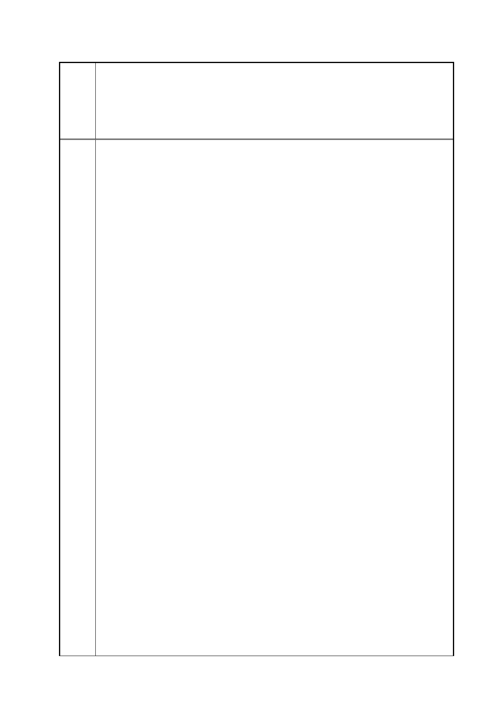

臺北市都市計畫委員會 公民或團體陳情意見綜理表
「變更臺北市信義區逸仙段二小段 33 地號等 21 筆土地（原臺北機廠）
案
名
工業區為創意文化專用區、特定專用區、道路及綠地用地主要計畫案」
及「擬定臺北市信義區逸仙段二小段 33 地號等 21 筆土地（原臺北機
廠）創意文化專用區、特定專用區、道路及綠地用地細部計畫暨劃定
都市更新地區計畫案」
1935 年興建的臺北機廠，曾經是東亞最先進的火車維修工廠！歷史
可上溯清末自強運動創建的臺北機器局。堅固結構使她在二戰空襲轟
炸中得以倖存，至今仍具備臺鐵局機車修繕的功能。臺北機廠不僅能
具體再現臺灣的鐵道工業技術演變兩甲子，其建築空間更是見證臺灣
在殖民時期、戰後美援時期，貼緊國際政治脈動的經濟發展痕跡，既
是國家級，也是國際級的文史資產！
臺北機廠廠區內的諸多建築已在近年陸續指定為古蹟或歷史建築，在
其空間的延伸用途上，早也吸引不少國內外影像工作者的青睞。除了
周杰倫的「天臺」一片就在臺北機廠的員工澡堂外拍攝外，日前上映
國際大導盧貝松的科幻片「露西」，女主角與計程車司機相遇的景點，
亦是在臺北機廠取景，文史價值外的城市特色與觀光價值，不言自明。
2.文史資產活化，應以最少商業用途、最大綠色保存為標準！
在全區保存的廠區空間內，我們希望各建築空間能將商業活動（賣
場、旅館等）降至最低，以臺北機廠本身的文史、技藝價值為主體，
成就最合宜之工業遺址文史氛圍。若有經營賣場或旅館，也應配合園
區整體展示規劃，切勿喧賓奪主，重蹈華山、松菸等消費取向的模式，
模糊了園區本該有的專屬特色。
同時，站在環境權的思考上，臺北機廠的廠房建築在採光和通風上均
具備「綠建築」的設計風範，也利用廠區設備用過的剩餘蒸氣加熱洗
澡水，甚至讓員工蒸便當等，在過度水泥化，高樓化、耗電化的都市
發展中，若能加入「綠色基地」的概念，致力於廠區原有植物的保存
和新增綠意，不僅讓文史資產涵容更多元的功能，對附近的居民或市
民而言，也能成為重要的城市生態廊帶。
3.臺北機廠未來規劃及營亦應充分納入社群（社區）參與。
今年年初，臺北機廠文史守護聯盟所舉辦的里民導覽活動中，也有北
廠員工的眷屬前來參與，他們在導覽結束後也分享自己與北廠相關的
往事，諸如來北廠找父親或兄長時所發生的童年趣事。從他們的口述
中，可見這座跨時代的老工廠，除了本身的工業價值外，同時也影響
著一般人民的生活，具備著「社區工廠」的開放性特質，這與臺灣現
下以專區、工業區為導向的產業發展，是截然不同的運作模式。
而許多退休的臺北機廠員工也仍住在松山、南港一帶，老北廠人每年
仍會定期會回北廠參加聚會，他們在訓練和勞動過程中形塑出「以廠
為榮」的精神認同，也是北廠口述歷史渾然天成的寶庫。若能參考德
國魯爾博物館從礦業洗煤廠轉型為魯爾區域發展史載體的案例，納入
第 59 頁/共 154 頁